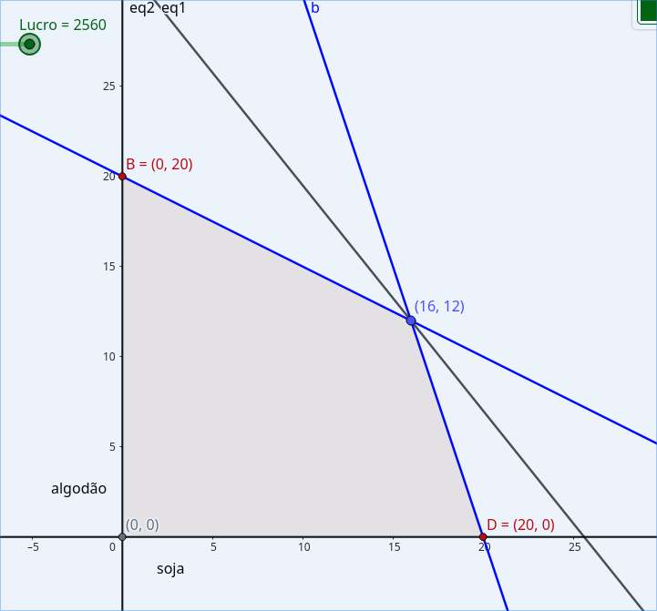

<----- Back to Exercises Index
To a given area, used to the production of soybeans and cotton, it's estimated that are 800 men/hour available during the sowing season, being needed 20 men/hour by hectare of soybeans and 40 men/hour by hectare of cotton.
It's offered a maximum line of credit of 6000 m.u. divided in the following way:
How to organize this plantation are if the profit margin expected is 100 m.u. by hectare of soybeans and 80 m.u. by hectare of cotton?
Objective: Find the quantity of soybeans and cotton to be produced in order to maximize the profit.
Decision Variables: Soybeans and Cotton
Table made to organize the given information:
| hectare | men/hour | credit | profit |
| soybeans (x) | 20 | 300 | 100 |
| cotton (y) | 40 | 100 | 80 |
| - | $$\leq 800$$ | $$\leq 6000$$ | - |
Objective Function: $$Z=100x+80y$$
Organizing the information, we have two given inequations:
$$20x+40y \leq 800$$ $$300x+100y \leq 6000$$That can be turn into a system of equations in order to find both x and y:
$$\begin{cases}20x+40y \leq 800\\300x+100y \leq 6000\end{cases}$$ $$x,y \geq 0$$As seen here, we can calculate this using some methods, however first we can simplify both equations to make things easier:
$$\begin{cases}20x+40y \leq 800 (\div 20)\\300x+100y \leq 6000 (\div 30)\end{cases}\longrightarrow\begin{cases}x+2y \leq 40\\3x+y \leq 60\end{cases}$$Here we will be using the addition without opposing signs method.
$$\begin{cases}x+2y \leq 40(*-3)\\3x+y \leq 60\end{cases}=\begin{cases}-3x-6y \leq -120(*-3)\\3x+y \leq 60\end{cases}$$ $$\begin{cases}-6y \leq -120\\y \leq 60\end{cases}\over -5y \leq -60$$ $$y \leq \dfrac{60}{5}$$ $$y \leq 12$$using the result of y on the first equation to find x:
$$x+2(12) \leq 40$$ $$x \leq 40-24$$ $$x \leq 16$$with that we have:
$$(16,12)$$That we can use to find the objective function:
$$Z=100x+80y$$ $$Z=100(16)+80(12)$$ $$Z=2560$$Result: 2560 m.u. is the maximum profit that can be achieved from the plantation of soybeans and cotton, given the constraints of labor availability and credit limits.
We can also represent this problem in a Cartesian Plane.
With that, we can see the maximum profit as the diagonal line that goes from (0,0) to (16,12), as being inside the viable region.